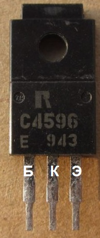
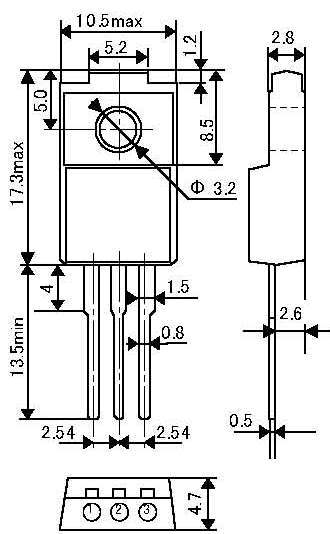

Транзистор 2SC4596
Транзистор 2SC4596 структуры n-p-n. Применяется для высокоскоростного переключения питания и преобразователей постоянного тока. Корпус TO-220Fa.


Рис. 1 - Внешний вид, цоколевка и размеры транзистора 2SC4596
Таблица 1
| Параметр | Значение |
|---|---|
| Напряжение коллектор-эмиттер, не более | 60 В |
| Напряжение коллектор-база, не более | 100 В |
| Напряжение эмиттер-база, не более | 5 В |
| Ток коллектора, не более | 3 А |
| Рассеиваемая мощность коллектора, не более | 25 Вт |
| Обратный ток коллектора | 50 мкА |
| Коэффициент усиления транзистора по току (h21э) | 60...320 |
| Предельная температура p-n-перехода | 150 °C |
 Справочный лист транзистора 2SC4596
Справочный лист транзистора 2SC4596
Источники
radioradar.net - Даташиты (Datasheets C4596) электронных компонентов